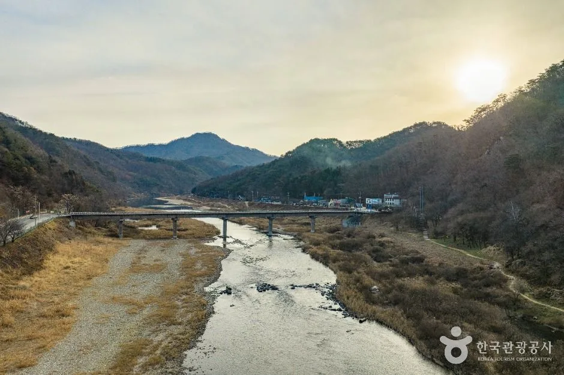
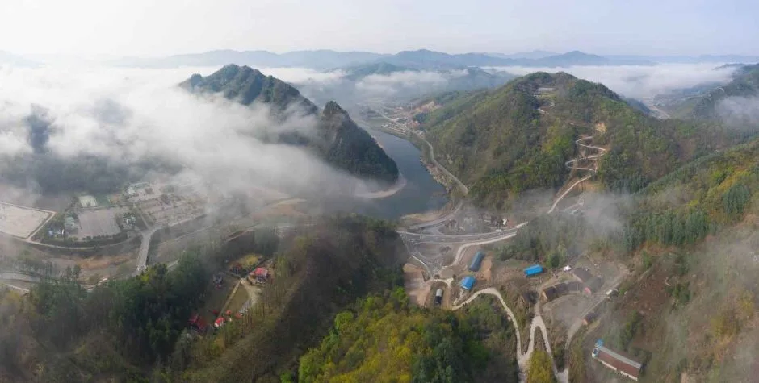
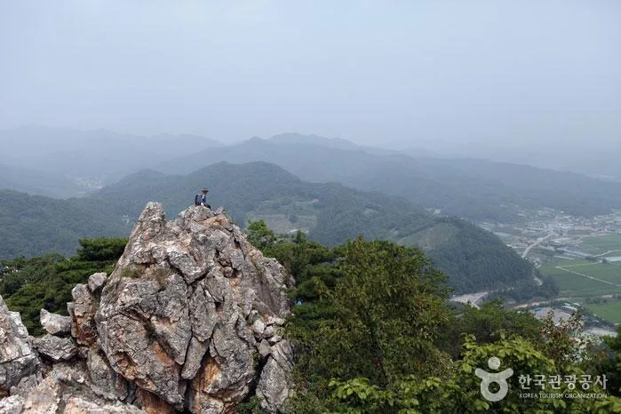
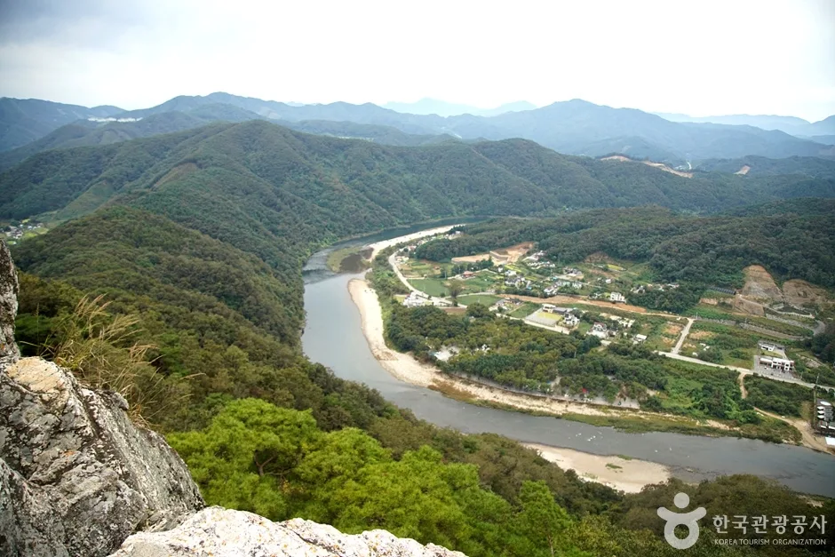
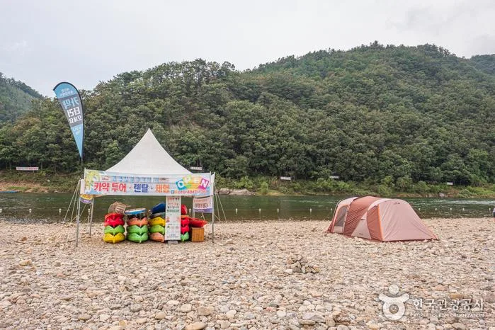
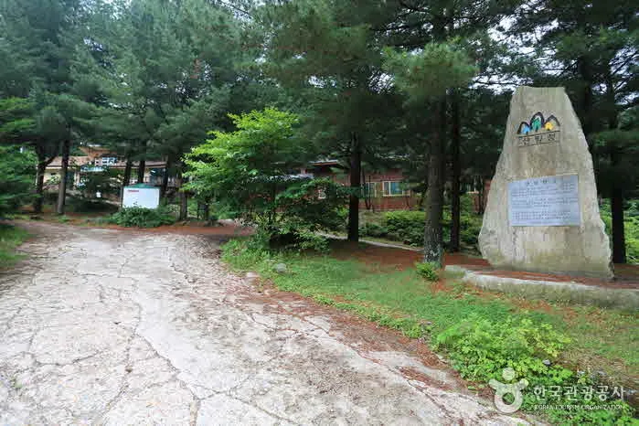

▲ 홍천강을 가로지르는 다리와 강변 도로. 억새가 마른 강변과 산자락의 물든 나무들이 늦가을 분위기를 그대로 보여준다
1. 인제에서 청평까지, 홍천강이 만드는 '강변 드라이브의 교과서'
홍천강은 인제에서 발원해 강원 홍천군을 서쪽으로 가로지른 뒤 경기 청평 부근에서 북한강과 합류하는, 한강의 지류다. 물이 깊지 않고 여름철 수온이 따뜻해 오래전부터 오토캠핑과 물놀이의 '국민유원지'로 불려온 강이지만, 정작 진가는 인파가 몰리기 전인 봄가을에 드러난다. 특히 391번 지방도와 37번 국도를 타고 홍천 설악면을 지나 모곡리까지 이어지는 구간은, 강을 옆에 끼고 달리는 국내 드라이브 코스 중에서도 '아는 사람만 아는 강변 드라이브의 교과서'로 통한다.
서울·경기권에서 접근한다면 두물머리 인근에서 45번 국도로 신청평대교를 건넌 뒤 37번 국도로 갈아타 설악면까지 진입하는 경로가 일반적이다. 이 구간부터 이미 북한강의 물빛을 곁에 두고 달리게 되고, 설악면부터는 본격적으로 홍천강의 영역이 시작된다.

▲ 물안개가 걷히는 홍천강 물굽이. 산자락 사이를 따라 흐르는 강줄기가 드라이브 코스의 원형이 된다 ⓒ 한국관광공사
2. 널미재를 넘어 팔봉산까지 — 구간별 경로 한눈에 보기
설악면에서는 86번 지방도로 갈아타 팔봉산유원지 방향으로 향한다. 시원하게 뚫린 강변 산업도로가 아니라 구불구불한 고갯길인 '널미재'를 넘어야 하는 시골길에 가깝지만, 고개를 넘어서면 굽이굽이 흐르는 홍천강이 곳곳에서 모습을 드러낸다. 모곡에 닿으면 잠시 방향을 바꿔 마곡유원지 쪽으로 가볼 만한데, 이곳은 수심이 깊어 보트·제트스키 등 수상스포츠를 즐기는 이들이 모이는 지점이다. 모곡에서 서면 방향, 즉 70번 지방도를 타면 팔봉산 국민관광지로 향하는 구간이 이어지며 이때부터가 이 드라이브의 절정으로 꼽힌다.
| 구간 | 주요 스팟 | 주차 | 참고(소요시간 등) |
|---|---|---|---|
| 설악면 → 마곡·모곡 (391번 지방도·37번 국도 → 86번 지방도, 널미재) | 마곡유원지, 모곡 | 유원지 인근 갓길·공터 주차 | 보트·제트스키 등 수상스포츠 구간 |
| 모곡 → 서면 팔봉산관광지 (70번 지방도) | 보리울·개야리·반곡·밤벌 유원지 | 유원지별 자체 주차 | 오토캠핑 벨트, 밤벌유원지는 약 1km 자갈 강변 |
| 팔봉산 국민관광지 | 팔봉산 8개 암봉(홍천9경 제1경) | 소형 268대·대형 65대(무료) | 등산 A코스 약 2시간, 전체 종주 약 3시간30분 |
| 팔봉산 → 노일리·금학산 (팔봉교 건너 비포장 강변길) | 노일분교, 금학산(652m) 전망 | 노일분교 인근 갓길 | 정상까지 약 2.7km, 왕복 약 1시간30분 등산 |
| 노일리 → 굴지리 (남노일대교 ~ 굴지 제2교) | 굴지리유원지 | 유원지 주차 가능 | 홍천강 최상류, 물살 빠르고 수심 깊은 편 |
| 둔지교차로 → 44번 국도 화로구이촌 | 양지말화로구이 등 식당가 | 식당가 자체 주차장 | 홍천 대표 로컬푸드로 코스 마무리 |
📍 지방도 번호가 자주 바뀌는 이유
이 코스는 391번 지방도·37번 국도·86번 지방도·70번 지방도·5번 국도·44번 국도를 구간마다 갈아타야 하는, 국도와 지방도가 촘촘히 얽힌 길이다. 강을 따라가는 도로가 행정구역과 관리 주체에 따라 노선 번호가 계속 바뀌기 때문인데, 내비게이션에 최종 목적지만 입력하기보다 팔봉산관광지·노일리·굴지리 등 중간 경유지를 구간별로 나눠 검색하는 편이 실제 도로 상황을 파악하기 쉽다.
3. 홍천9경 제1경, 팔봉산 국민관광지
이 드라이브 코스에서 팔봉산을 빼놓고는 이야기가 되지 않는다. 강원 홍천군 서면 한치골길 1124에 있는 팔봉산은 해발 327m로, 산림청이 선정한 '한국의 100대 명산' 가운데 가장 낮은 산이면서 동시에 홍천9경 중 제1경으로 꼽히는 곳이다. 홍천강이 산의 삼면을 휘감아 흐르고, 정면에서 보면 여덟 개의 바위 봉우리가 나란히 이어져 마치 병풍처럼 보인다. 수심이 얕고 강변이 넓어 '수도권 최고의 자연 물놀이터'로도 불린다.
등산은 매표소에서 시작해 1봉부터 8봉까지 일방통행으로 오르는 구조이며, 2봉에서 내려오는 A코스(약 2시간), 7봉 하산 코스(약 3시간), 8개 봉우리를 모두 넘는 전체 종주(약 3시간30분) 중 체력에 맞춰 선택할 수 있다. 다만 급경사 암릉 구간에 로프와 철제 사다리가 설치돼 있을 만큼 산세가 만만치 않으니 초보자는 코스 선택에 유의해야 한다. 주차장은 소형 268대·대형 65대 규모로 무료 운영되며, 관광지 안에는 산채비빔밥과 홍천강 민물고기 매운탕을 파는 식당가도 있다. 상세 이용 정보는 홍천군청 팔봉산관광지관리사무소 홈페이지에서 확인할 수 있다. 바로가기

▲ 팔봉산 암봉 정상에서 산줄기를 내려다보는 등산객. 급경사 암릉 구간이 많아 로프·사다리 등 안전시설이 설치돼 있다 ⓒ 한국관광공사

▲ 팔봉산 봉우리에서 내려다본 홍천강 물굽이와 강변 마을. 강이 산의 삼면을 휘감아 도는 지형이 한눈에 들어온다 ⓒ 한국관광공사
4. 보리울·개야리·반곡·밤벌 — 오토캠핑 유원지 벨트
모곡에서 서면까지 이어지는 구간에는 보리울유원지, 개야리유원지, 반곡유원지, 밤벌유원지가 차례로 나오는데, 모두 오토캠핑이 가능한 곳들이다. 이 중 밤벌유원지는 약 1km 길이의 강변에 자갈과 모래가 넓게 펼쳐져 있어 특히 인기가 높다. 야영이 불편하다면 주변 펜션과 민박을 이용해도 좋다. 북방면 굴지강변로 쪽에는 캐라반·오토캠핑·프리텐트 사이트를 갖춘 홍천강 오토캠핑장도 별도로 자리하고 있어, 캠핑 목적이라면 선택지가 여럿이다.
홍천강에서 빼놓을 수 없는 또 다른 즐길거리는 낚시다. 물속에 직접 들어가 고기를 낚는 '견지낚시'가 특히 유명한데, 마곡~모곡~팔봉산으로 이어지는 구간이 견지낚시의 명당으로 알려져 있다. 그중에서도 팔봉산유원지 부근의 어유포리, 팔봉리의 되룡골, 모곡리의 밤벌유원지가 낚시꾼들이 즐겨 찾는 포인트로 꼽힌다. 견지대와 낚싯줄, 미끼는 강 주변 가게에서 바로 구할 수 있어 별도 장비 없이도 즐길 수 있다.

▲ 홍천강 자갈 강변의 텐트와 카약 대여 부스. 강폭이 넓고 물이 얕은 구간이 많아 오토캠핑과 수상레저를 함께 즐기기 좋다 ⓒ 한국관광공사
5. 팔봉교를 건너면 시작되는 비포장 드라이브 — 노일리와 태극 문양
팔봉산 관광지에서 드라이브를 끝내도 좋지만, 여운이 남는다면 팔봉교를 건너 펜션촌 방향으로 들어가는 길을 따라가 볼 만하다. 좁은 비포장·시멘트 길이 번갈아 나타나고 움푹 팬 구간도 많아 서행이 필요하지만, 그만큼 유원지의 번잡함에서 벗어난 한적한 강변 풍광을 만날 수 있다.
이 길을 따라가면 노일리 부근의 금학산(652m)에 닿는다. 금학산 정상에 올라 남쪽을 내려다보면, 영월 동강의 한반도 지형처럼 홍천강이 그려내는 태극 문양을 볼 수 있다. 드라이브 코스를 따라가며 오르기 좋은 코스는 노일분교에서 시작하는 등산로로, 괸돌과 갈림길을 지나 정상까지 약 2.7km, 1시간30분 정도가 걸린다. 노일분교와 남노일대교를 지나 계속 달리면 홍천강 최상류에 해당하는 굴지리유원지에 닿는데, 상류답게 물이 맑고 물살이 빠른 편이라 오토캠핑 명소로도 인기가 높다.

▲ 팔봉산관광지 입구 표지석. 이곳에서 팔봉교를 건너면 노일리·굴지리로 이어지는 한적한 강변길이 시작된다 ⓒ 한국관광공사
6. 단풍은 언제, 무엇을 챙겨야 할까
강원 산간지역의 2026년 단풍 절정 시기는 오대산 10월 16일, 설악산 10월 25일 전후로 예측되고 있다. 홍천강 일대는 이들 고산지역보다 고도가 낮은 강변 지형인 만큼, 산 정상부의 절정 시기보다 다소 늦은 10월 하순부터 11월 초 사이가 강변 단풍의 절정으로 예상된다. 다만 이는 예년 경향에 따른 예측치이며, 실제 절정 시기는 그해 기온 변화에 따라 며칠씩 앞당겨지거나 늦춰질 수 있어 방문 직전 기상청·지자체 단풍 예보를 다시 확인하는 것이 안전하다.
드라이브를 마무리하는 지점도 알아두면 좋다. 굴지리유원지를 지나 굴지 제2교에서 우회전한 뒤 소매곡교를 건너면 5번 국도와 만나 코스가 마무리되는데, 홍천 시내로 가기 전 둔지교차로에서 44번 국도로 갈아타면 홍천의 명물인 화로구이촌이 나온다. 고추장을 바른 삼겹살을 참숯 화로에 구워 먹는 방식으로, 양지말화로구이를 비롯해 6~7곳의 화로구이 전문점이 모여 있다. 좁은 비포장 구간이 포함된 만큼 대형 SUV보다는 승용차 기준으로도 서행이 가능한 코스이며, 주말과 성수기에는 펜션 진입 차량과 뒤섞일 수 있어 여유 있게 시간을 잡는 편이 낫다.
✅ 홍천강변 가을 드라이브, 이것만은 확인하세요
· 핵심 경로: 설악면(391번 지방도·37번 국도)→86번 지방도(널미재)→모곡·마곡→70번 지방도(팔봉산)→노일리·금학산→굴지리→44번 국도
· 팔봉산관광지 주차 무료(소형 268대·대형 65대), 등산은 약 2시간~3시간30분 소요
· 보리울·개야리·반곡·밤벌 유원지 일대는 오토캠핑 벨트, 밤벌유원지는 약 1km 자갈 강변
· 노일리 금학산(652m) 정상에서 홍천강이 그리는 태극 문양 조망 가능(왕복 약 1시간30분)
· 2026년 강원 산간 단풍 절정은 오대산 10월 16일·설악산 10월 25일 전후 예측, 홍천강 강변은 10월 하순~11월 초 예상
7. 정리
홍천강변 드라이브는 하나의 곧은 길이 아니라, 지방도와 국도를 갈아타며 강의 굽이굽이를 따라가는 여정이다. 팔봉산의 여덟 봉우리가 만드는 절경과 보리울·개야리·반곡·밤벌로 이어지는 유원지 벨트, 그리고 노일리 금학산에서 내려다보는 태극 문양의 강줄기까지, 구간마다 표정이 다른 것이 이 코스의 매력이다. 강물에 가을빛이 내려앉는 10월 하순부터 11월 초, 서두르지 않고 굽이마다 차를 세워가며 달려볼 만한 길이다.